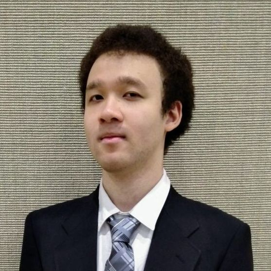

Welcome to my page!
My name is Lloyd Murphy. I am a CEN graduate from UB. While relieved to have finally graduated, I continue to seek knowledge and expand my array of talents. Visit the projects page to see a few of the projects I've worked on. You can also find me on Github.
- Software Engineering
- Integrated System Design
- Web Development
- Other